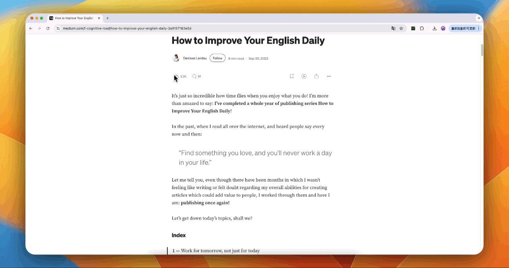
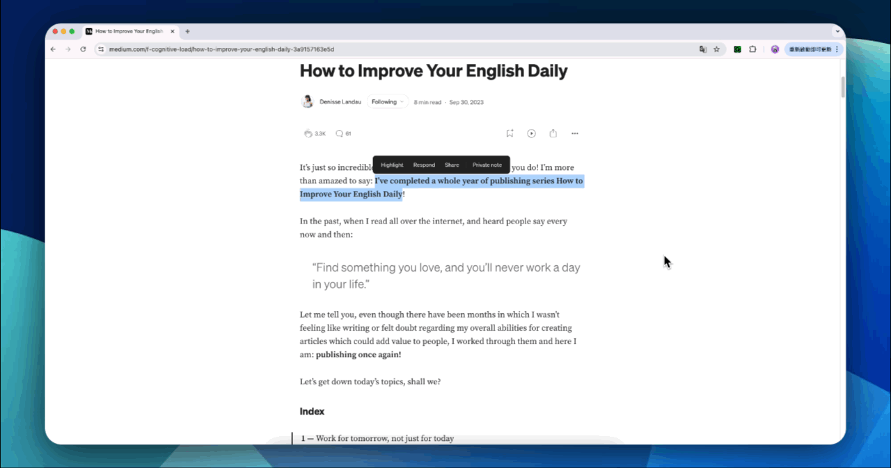
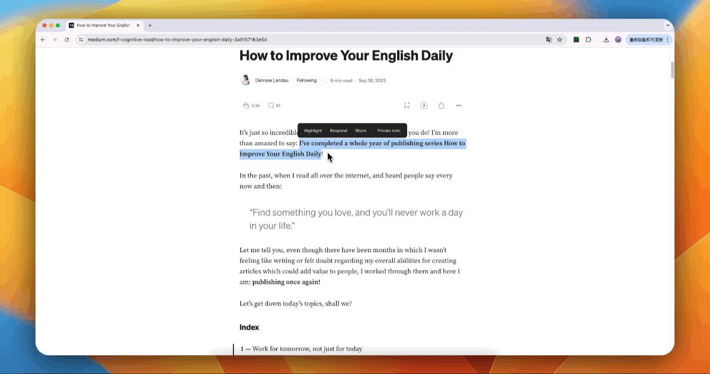
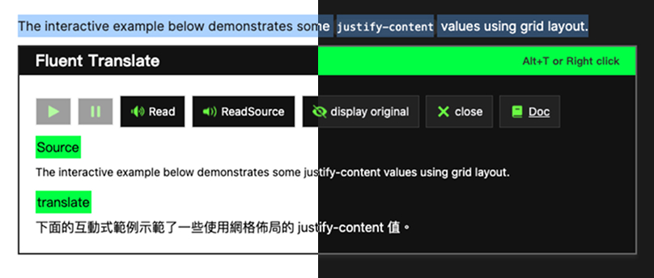

TUTORIAL
SELECT TEXT
Highlight any word or paragraph you want to translate on a webpage.
ACTIVATE TRANSLATION
Press Alt+T or use the right-click menu to translate.
For the best experience, please use it mainly on article-style pages.
Right + Click
Alt + T
Setting
Customize your experience by setting your primary and secondary languages, adjusting font size, and positioning the control buttons — all from the settings panel.
Mode
Change colors according to your system settings mode
FEATURES
Fluent Translate is a lightweight yet powerful Chrome extension that instantly translates selected text and seamlessly inserts the translation into the webpage without disrupting the layout. With intelligent design and customizable controls, it enhances your reading fluency. Whether you're learning a new language or reading for everyday purposes, its smart interface and user-friendly features help you easily understand every part of the content. (Currently limited to 1000 words per translation)
Click to toggle language list
⚡️ Instant One-Click Translation
Translate selected text in a flash using Alt + T or right-click context menu—without breaking your reading flow.
✨ Seamless Inline Integration
Translated content is inserted directly into the page layout, preserving the original design and readability. Perfect for translating unfamiliar words or full paragraphs.
🔊 Smart Bilingual Text-to-Speech
Listen to both the original and translated text using your browser’s built-in speech engine. *Note: Some languages may not support TTS.
🌐 Intelligent Language Priority Logic
Automatically detects and chooses the most relevant translation direction based on your preferences:
🎛️ Fully Customizable Settings Panel
🍃 Lightweight, Minimalist Design
Clean interface, low resource usage—quietly works in the background without cluttering your experience.
For the best experience, please use it mainly on article-style pages.
Currently, the translation feature is powered by the Google Cloud
Translation API,
with a limit of 1,000 characters per
translation. When the API quota is exceeded,
the system will
automatically switch to an alternative translation service to ensure
continuous functionality.